Обзор
В CRYENGINE объекты можно превращать в предметы, которые можно выбирать. Игрок может поднять их одной или двумя руками, носить с собой и снова бросить. Поведение выбора зависит от игрового сценария.
Например, в скрипте Crysis Game есть два типа поведения выбора:
Одноручный: Игрок возьмет предмет левой рукой и будет держать его в этой руке. Оружие в его правой руке по-прежнему можно будет использовать. Если игрок держит двуручное оружие, оружие будет переключено на кулаки.
Двуручный: Игрок поднимет и удержит объект обеими руками. Сами руки не будут видны при виде от первого лица; Кроме того, нельзя будет использовать никакое оружие.
Требования
Выбираемый объект можно настроить с помощью инструмента DCC, выполнив:
- К нему прикреплен прокси-сервер коллизий NoDraw.
- Определенная масса или плотность (задается либо в свойствах объекта 3ds Max, либо в объекте в Sandbox).
- Помощник по захвату, к которому привязано правильное имя.
Базовая настройка в 3ds Max
Чтобы определить положение объекта на игровом экране, помощник должен быть связан с объектом и выровнен по нему. Присутствие такого помощника захвата в иерархии объектов превращает объект в выбираемый объект.
В анимации захвата одной рукой кость «item_attachment» находится в левой руке игрока. При двуручном захвате кость располагается по центру между руками игрока.
Используйте «Локальную» систему координат при настройке вращения помощника захвата.
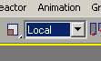
Объекты, подбираемые одной рукой
- Пример файла: pickable_onehanded.max
- Пример иерархии:
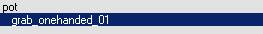
Настройка помощника:
1. Откройте сцену Max и создайте помощника «Dummy».
2. Назовите это "grab_onehanded_01".
3. Свяжите помощник grab_onehanded_01 с объектом.
4. Выровняйте его по объекту.
5. Продолжайте экспорт.
Двуручные предметы, которые можно выбирать
- Пример файла: pickable_twohanded.max
- Пример иерархии:
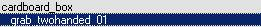
Настройка помощника:
1. Откройте сцену Max и создайте помощника «Dummy». Назовите его "grab_twohanded_01".
2. Свяжите помощник grab_twohanded_01 с объектом.
3. Выровняйте его по объекту.
4. Продолжайте экспорт.
Части разрушаемых предметов
Когда разрушаемый объект уничтожается, он порождает части, а также оставшийся объект. Эти объекты также можно настроить как выбираемые.
Этот процесс аналогичен процессу для выбора одной и двумя руками, но имя объекта, с которым связан помощник, необходимо добавить в качестве префикса перед именем помощника (например, remain_grab_twohanded_01). Помощник захвата для неуничтоженной версии объекта («основной») не обязательно должен иметь префикс.
- Пример файла: pickable_destroyable.max
- Пример иерархии:
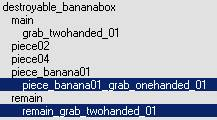
Базовая настройка в 3ds Max:
- Откройте сцену max и создайте фиктивный помощник для объекта. Назовите его, как описано в обзоре:
- remain_grab_twohanded_01 или piece_banana01_grab_onehanded_01.
- Свяжите помощник захвата с объектом.
- Выровняйте его по объекту.
В большинстве случаев помощник должен располагаться ниже объекта, чтобы игрок мог видеть объект, поскольку в двуручном режиме он не может видеть собственные руки.
Поворот этих порожденных частей/остатков, который вы можете видеть в инструменте DCC, не обязательно соответствует положению объекта в игре. Это означает, что размещение помощников для этих объектов может потребовать некоторого количества проб и ошибок. Рекомендуется всегда использовать неуничтоженную версию объекта в качестве ссылки для выравнивания вашего помощника.
4. Повторите шаги 1–3 для всех частей/останков, которые можно забрать.
5. Продолжайте экспорт.
Использование выбираемого вспомогательного файла шаблона
Во время разработки Crysis компания Crytek разработала усовершенствованную технику, позволяющую привязывать помощников для захвата одной рукой к подбираемым объектам в 3ds Max. Существует файл template, который содержит руки игрока в позе захвата, которая будет видна в игре от первого лица, и камеру, которая воспроизводит камеру от первого лица в игре. Также имеется помощник захвата, который связан с помощником с ограничением трансформации. Это упрощает одновременное поворот всего файла template и помощника захвата без отключения помощника.
Ключевым моментом в этой технике является вращение всех рук, template, включая помощника по захвату, до тех пор, пока результат не будет выглядеть так, как хотелось бы, при виде от первого лица. Недостатком этого метода является то, что сцена может стать сложной, особенно если в сцену объединено более одного template. В этом вам поможет эффективное использование слоев.
Выбираемый вспомогательный файл template: pickable_template.max
3ds Max Настройка:
- Объедините файл "pickable_template.max". Выделите все объекты в окне слияния.
- Свяжите помощник «grab_onehanded_01» со своим объектом.
- Отрегулируйте положение и вращение помощника "pickable_template", пока вы не будете удовлетворены положением. Помощник "grab_onehanded_01" ограничен "pickable_template", поэтому он унаследует все изменения преобразования помощника "pickable_template".
- Продолжить экспорт.
Пример хорошо согласованного выбираемого помощника template:
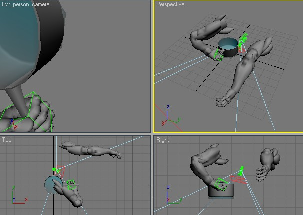
Экспорт
- Добавьте корневой узел выбираемого объекта в список экспорта.
- Убедитесь, что выбран параметр «Экспорт по узлу», а флажок «Объединить все узлы» снят.
- Нажмите экспорт.
Все, что связано с этим объектом, включая все подобъекты/помощники, будет экспортировано в один файл.
Базовая настройка в Maya
Maya Предметы, подбираемые одной рукой
- Пример иерархии:
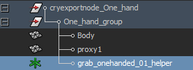
Настройка помощника:
1. Откройте сцену Maya и создайте локатор. Назовите его "grab_onehanded_01_helper".
2. Вставьте grab_onehanded_01_helper в узел группы объектов.
3. Выровняйте его по объекту.
4. Продолжить экспорт.
Maya Объекты, которые можно выбирать двумя руками
- Пример иерархии:
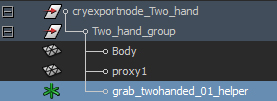
Настройка помощника:
1. Откройте сцену Maya и создайте локатор. Назовите его "grab_twohanded_01_helper".
2. Вставьте grab_twohanded_01_helper в узел группы объектов.
3. Выровняйте его по объекту.
4. Продолжайте экспорт.
Maya Части разрушаемых объектов
Когда разрушаемый объект уничтожается, он порождает части, а также оставшийся объект. Эти объекты также можно настроить как выбираемые.
Этот процесс аналогичен процессу для выбора одной и двумя руками, но имя объекта, с которым связан помощник, необходимо добавить в качестве префикса перед именем помощника (например, remain_grab_twohanded_01_helper). Помощник захвата для неуничтоженной версии объекта («основной») не обязательно должен иметь префикс.
Настройка в Sandbox
Чтобы ваш выбираемый объект работал в Sandbox, поместите его как GeomEntity или любой объект, у которого для «Pickable» и «RigidBody» установлено значение true. «Пригодно для использования» должно быть отключено.
Выбираемые типы объектов:
- Объекты, у которых для «Pickable» и «RigidBody» установлено значение «true», а для «Usable» — «false».
- Частицы, содержащие помощник захвата.
- Объекты Ragdoll, содержащие помощника по захвату (например, трупы).
- Сущности класса «По умолчанию» (кусочки сломанной растительности).
- Процедурная растительность с флагом «Pickable», установленным в true.
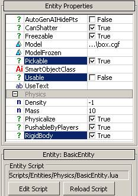
Выбор анимированных персонажей, не относящихся к AI
Персонажи, не относящиеся к AI, также могут быть выбраны (например, животные).
В этом случае вам нужно использовать редактор символов в Sandbox, чтобы настроить вложение-помощник. Вы не можете сделать это с помощью инструмента DCC.
Помощник-захват будет добавлен персонажу в качестве прикрепления к кости. Итак, ориентация помощника зависит от кости, к которой он будет прикреплен. Не обязательно применять объект к вложению, но для облегчения выравнивания рекомендуется использовать объект с четко видимой ориентацией. Объект будет удален из вложения позже, когда будет достигнут желаемый результат.
Создание вложения:
- Откройте файл .chr или .cdf, который вы хотите сделать доступным для выбора в редакторе символов.
- Добавьте новое вложение.
- Примените эту аттачмент как аттач к любой кости (предпочтительно корневой кости рига, так как она не анимирована).
- Перемещайте и вращайте объект до тех пор, пока не решите, что он может быть правильно выровнен позже в виде от первого лица.
- Сохраните свою работу в виде файла .cdf.
- Поместите своего анимированного персонажа, отличного от AI, в виде перспективы в Sandbox (животные обычно помещаются из библиотеки ArchetypeEntity).
- Перейдите в игровой режим, возьмите своего анимированного персонажа, не являющегося AI, и посмотрите, выглядит ли его мировоззрение так, как хотелось бы, при виде от первого лица.
Чтобы удалить объект, который использовался в качестве вспомогательного средства для выравнивания, откройте файл .cdf в Блокноте и удалите путь к объекту. Повторяйте шаги 4–7 до достижения желаемого результата.
Во время выравнивания:
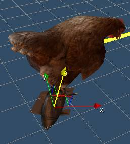
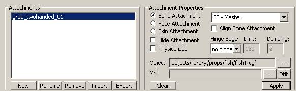
После удаления пути к объекту в Блокноте:
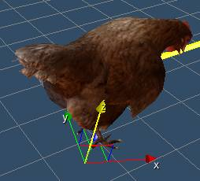
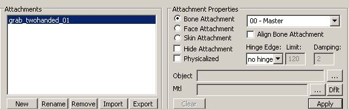
Примечания
Изменения в выбираемом поведении AI-персонажей и процедурных объектов среды нарушения должны быть изменены в коде игры. Для персонажей AI имя кости, которая служит помощником при захвате, должно быть определено кодом игры. Позиция захвата выбираемых частей процедурно разрушаемой среды расположена со смещением от ее оси, которая должна быть определена кодом игры.
Отладка
Самый простой способ проверить, как это работает, — разместить актив, зайти в игру, а затем захватить его, нажав F.
e_DebugDraw
Draw helpers with information for each object (same number negative hides the text)
1: Name of the used cgf, polycount, used LOD
2: Color coded polygon count
3: Show color coded LODs count, flashing color indicates no Lod
4: Display object texture memory usage
5: Display color coded number of render materials
6: Display ambient color
7: Display tri count, number of render materials, texture memory
8: RenderWorld statistics (with view cones)
9: RenderWorld statistics (with view cones without lights)
10: Render geometry with simple lines and triangles
11: Render occlusion geometry additionally
12: Render occlusion geometry without render geometry
13: Display occlusion amount (used during AO computations). Warning: can take a long time to calculate, depending on level size!
15: Display helpers
16: Display debug gun
17: Streaming info (buffer sizes)
18: Streaming info (required streaming speed)
19: Physics proxy triangle count
20: Display object instant texture memory usage
21: Display animated object distance to camera
22: Display object's current LOD vertex count